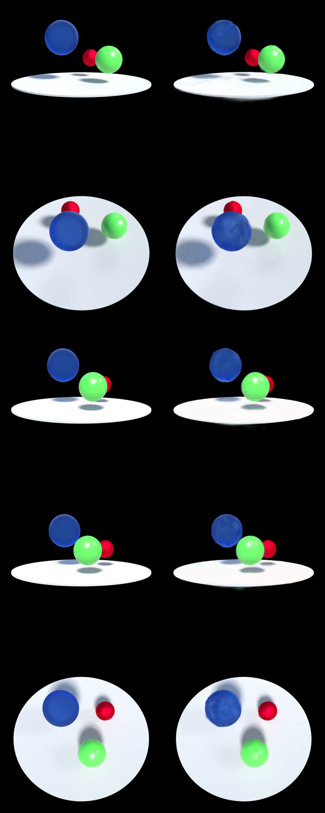
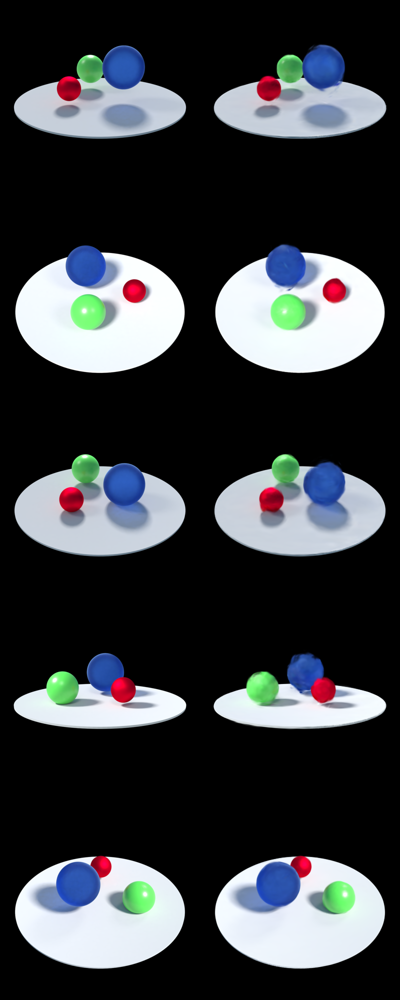
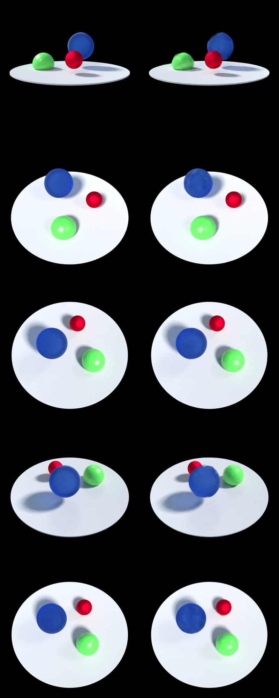
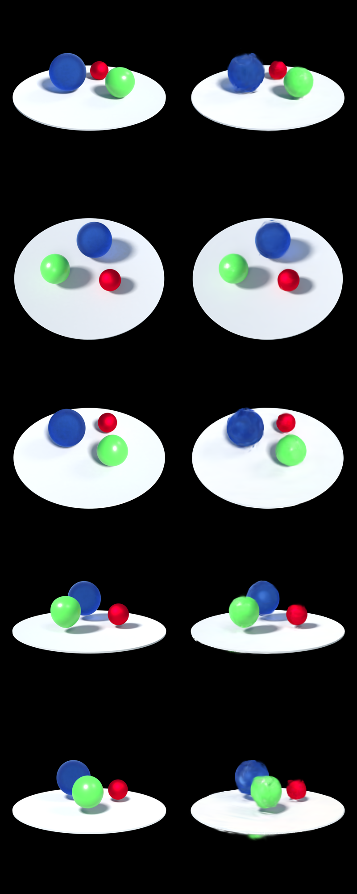
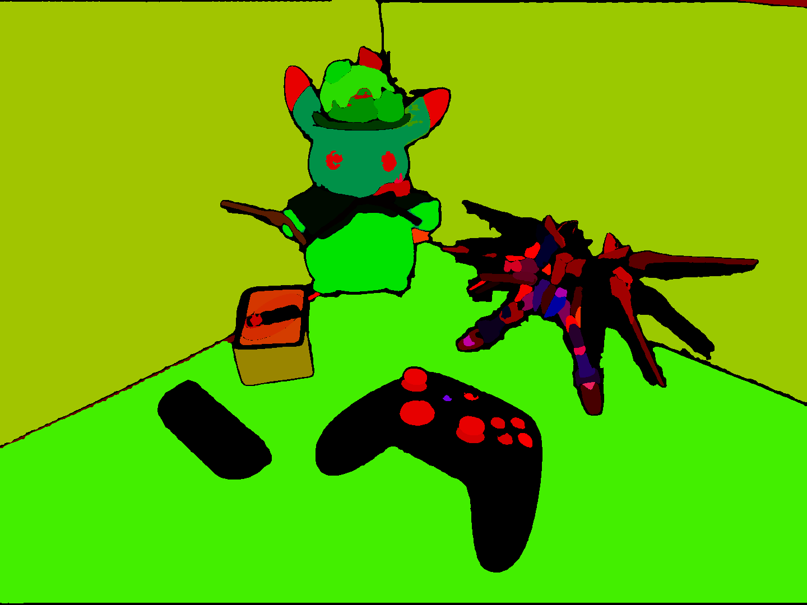
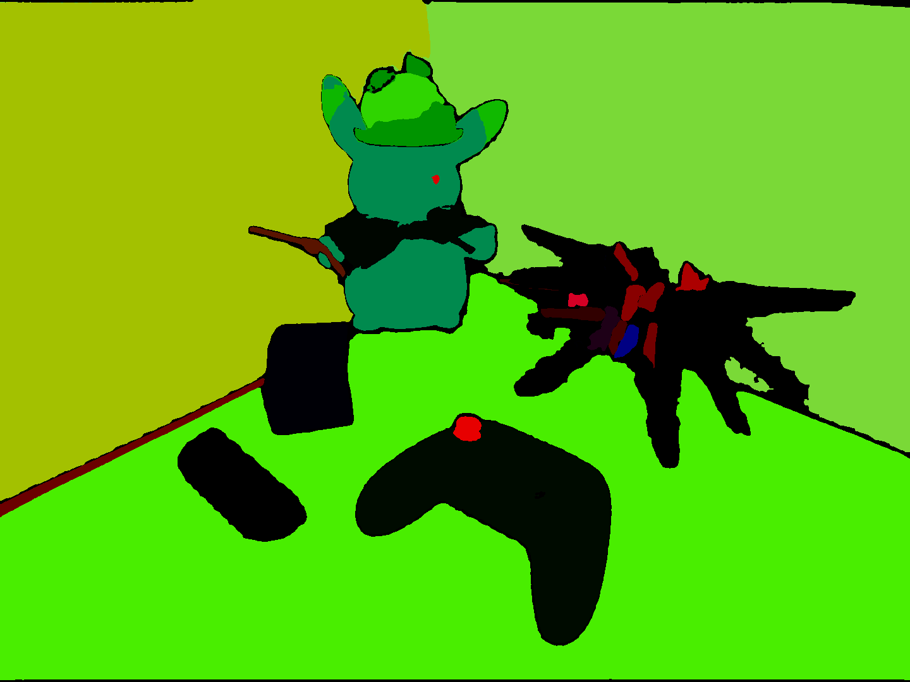
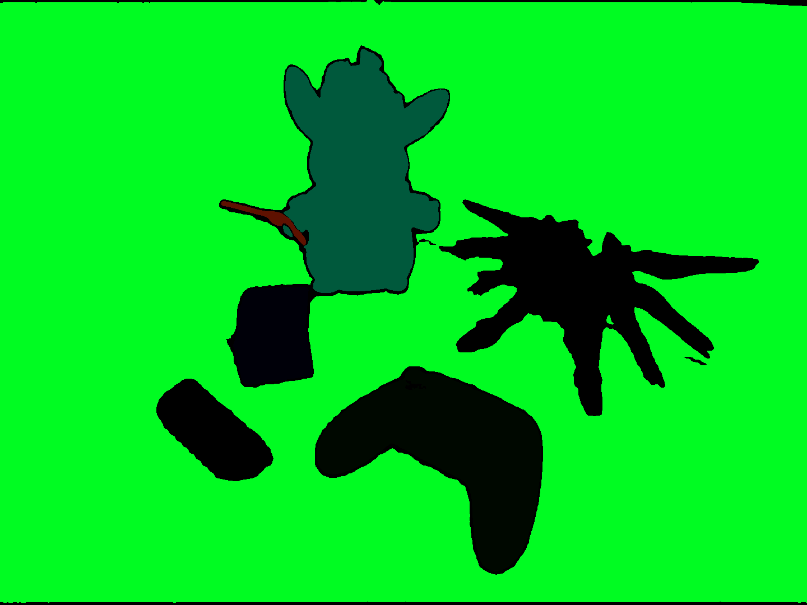

Quick synthesis of novel views in a 3D scene given a limited amount of views is a fast-growing research area in graphics and computer vision. A variety of approaches to learn the plenoptic function have been explored, including Neural Radiance Fields, Plenoxels, and recently, 3D Gaussian Splatting, a technique where a machine learning model fills a scene with millions of anisotropic 3D Gaussians and optimizes their shape, size, and color to approximate the scene as best as possible.
Extensions to Gaussian splatting such as 4D Gaussian Splatting and Language-Embedded 3D Gaussian Splatting allow for quick rendering of novel views within a dynamic scene from obtained from videos (as opposed a static scene obtained from images) as well as identification/semantic encoding of objects in a scene, respectively.
Our project aims to combine the two to add semantic encoding across time within the changing scene learned by Gaussian Splatting, allowing the creation of heatmaps and fast object tracking within scenes.
Our group spent the first week reading important papers describing the technologies used in the project, primarily those concerning 3D and 4D Gaussian splatting as well as Language-Embedded Gaussian Splatting.
After familiarizing ourselves with the techniques and technologies used, the second week was spent familiarizing ourselves with the code in each of the two papers' repositories we aim to combine and setup to produce some example renders matching the quality described in the papers.
To demonstrate 4D Gaussian splatting, our group used a dynamic scene containing bouncing balls from the DeNeRF dataset. To demonstrate 3D Language Gaussian Splatting, a video with changing camera positions in a static scene containing various objects on a sofa with color highlighting for objects in different classes was produced.
|  |  |  |  |
L1 Features (Finest Grain, Subparts) |
|
|  | |
L2 Features (Medium Grain, Parts) |
|
|  | |
L3 Features (Coarsest Grain, Whole Objects) |
|
|  |